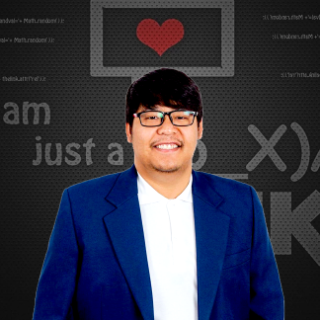

Thirayu
—
TH
◐
☰
Thirayu Meererksom
—
→
⬇
in
GH
⌂
iD
✉

15+
12+
3
8+
Automated real-time surveillance of
Bithynia
snails using a comparative YOLO-based approach for liver fluke host detection
Jenwithee T,
Meererksom T
, Limpanont Y, Sripa B, Laha T, Suwannatrai AT. —
Scientific Reports
(Nature), 2026; 16:14886.
DOI → 10.1038/s41598-026-43387-x
ORCID
0000-0001-6414-3607
·
✉ thirayu.m@gmail.com
in LinkedIn
⬇
×